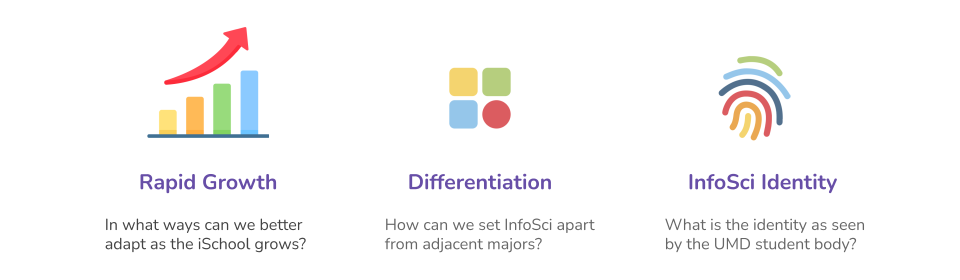
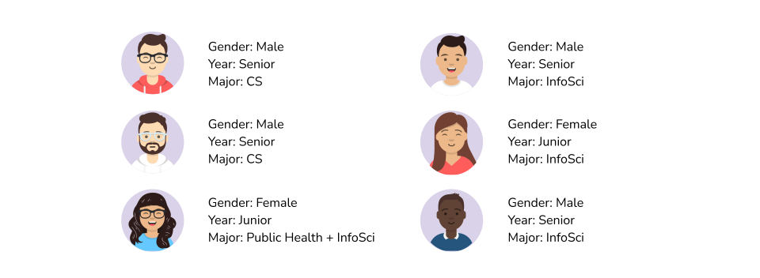
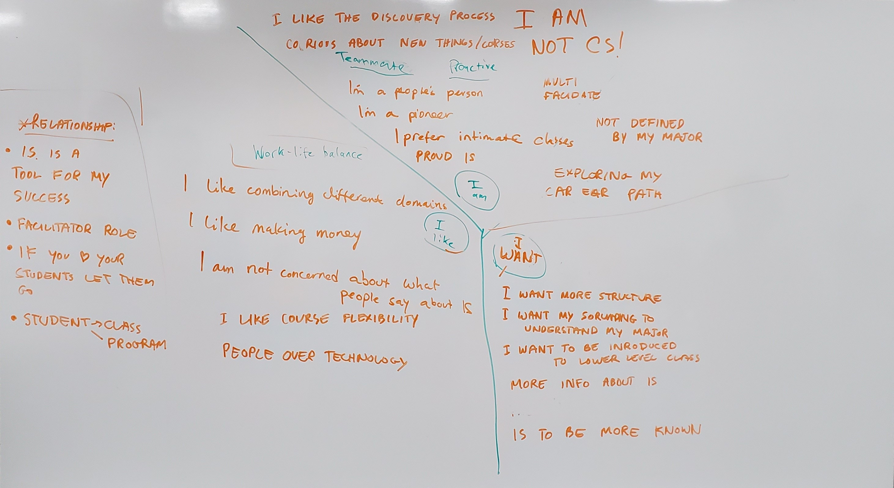

Discovering & promoting the identity of a college major
I collaborated with the College of Information Studies (iSchool) to discover aspects of their Information Science major that differentiates them from other similar majors.

ROLE
UX ResearcherContent Writer & Editor
Interviewer
TEAM
6 UX ResearchersEach also taking on additional role such as Graphic Designer, Editor, Communicator.
CLIENT
College of Information StudiesUniversity of Maryland
PROCESS & OUTCOME
Contextual InquiryConceptual solution to better market the program
PROBLEM
Rapid growth & differentiating InfoSci from other majors
The program has grown in size rapidly and created a massive student body with an ambiguous identity. Combined with the relative recency and interdisciplinary nature of the field, concisely marketing what exactly the program will offer has proved difficult.
I was interested in discovering how InfoSci might differentiate itself from similar programs and defining a solid identity through research in order to cater to the majority of the student body that transfers from other majors.

PROCESS
Contextual Inquiry
We conducted our research using contextual inquiry which has its foundation on conducting immersive interviews. These interviews are then interpreted as a group and different models are created to visualize the data. These models then drive solution generation.
CONTEXTUAL INQUIRY
Interviews with InfoSci & CompSci students
I conducted interviews with six students because students form the identity of the program. At the same time, I also wanted to hear some opinions from outside the program to see how the program is perceived by the UMD community. I also wanted to account for diversity in the ethncities and genders in our interview participants.

CONTEXTUAL INQUIRY
Interpretation sessions with the team
We relived the interviews as a group, asking follow-up questions to the interviewer and understanding the context and perspective of the interviewee. This also allowed us to lay the ground work to create our affinity diagram and experience models.

FINAL RESULT
Affinity Diagram
The affinity diagram represents the data as a four-tier hierarchy of themes and issues. I aimed to uncover patterns and persistent issues from the diverse participants and look at the data holistically. The affinity diagram served as the basis for developing further experience models.


 2022
2022